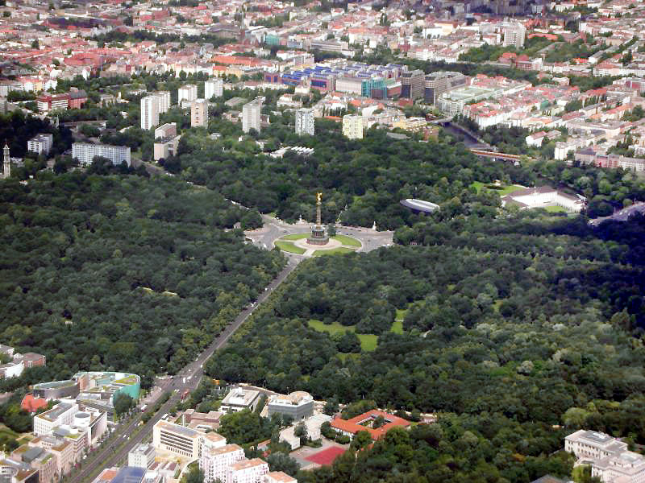

Berlin is an important center of the European and German film industry. It is home to more than 1000 film and television production companies and 270 movie theaters. Also, 300 national and international co-productions are filmed in the region every year. The historic Babelsberg Studios and the production company UFA are located outside Berlin in Potsdam. The city is also home of the European Film Academy and the German Film Academy, and hosts the annual Berlin International Film Festival. Founded in 1951, the festival has been celebrated annually in February since 1978. With over 430,000 admissions it is the largest publicly attended film festival in the world.

Berlin is currently at the leading edge of the global contemporary art scene. There are over 600 art galleries in the city. It is estimated that 6,000 to 7,000 artists live in the city, with a quarter of them being from outside Germany. The beginnings of the modern boom in Berlin's art scene were during the 1990s. In 1995, a Berlin art fair, Art Forum Berlin, was first held. The Berlin Biennale for contemporary artists, held every June, began in 1998. Galleries have grown steadily in number since then. Galleries and artists' residences are mostly found in the neighbourhoods in Mitte (particularly along Auguststraße), Kreuzberg, Wedding, and Charlottenburg.

Berlin's architecture combines elements from almost all periods and all styles. Emblematic of Berlin, the Brandenburg Gate is a renowned landmark in the city. There the world-famous boulevard Unter den Linden begins. Walking along and making small detours from this avenue one can catch a glimpse of the State Opera House, admire the Hedwig's Cathedral or take a closer look at the collections of the Old Museum, which reveal a microcosm of cultural excellence. Berlin landmarks, such as the Gendarmenmarkt and the French and German Cathedral (including the Schauspielhaus), are the highest examples of the city's Classicist architecture.
Zoologischer Garten Berlin, the older of two zoos in the city, was founded in 1844, and presents the most diverse range of species in the world.
It was the home of the captive-born celebrity polar bear Knut,born in December 2006. The city's other zoo is Tierpark Friedrichsfelde,
founded in 1955 on the grounds of Schloss Friedrichsfelde in the Borough of Lichtenberg.
Berlin's Botanischer Garten includes the Botanic Museum Berlin. With an area of 43 hectares (110 acres) and around 22,000 different plant species it is
one of the largest and most diverse gardens in the world. Other gardens in the city include the Britzer Garten, site of the 1985 Bundesgartenschau,
and the Erholungspark Marzahn, promoted under the name Gardens of the world.

The Tiergarten is Berlin's largest park located in Mitte and was designed by Peter Joseph Lenné. In Kreuzberg the Viktoriapark provides a good
viewing point over the southern part of inner city Berlin. Treptower Park beside the Spree in Treptow has a monument honoring the Soviet soldiers killed
in the 1945 Battle of Berlin. The Volkspark in Friedrichshain, which opened in 1848, is the oldest
park in the city. Its summit is man-made and covers a Second World War bunker and rubble from the ruins of the city; at its foot is Germany's main memorial
to Polish soldiers.